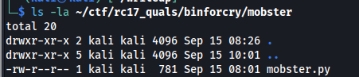
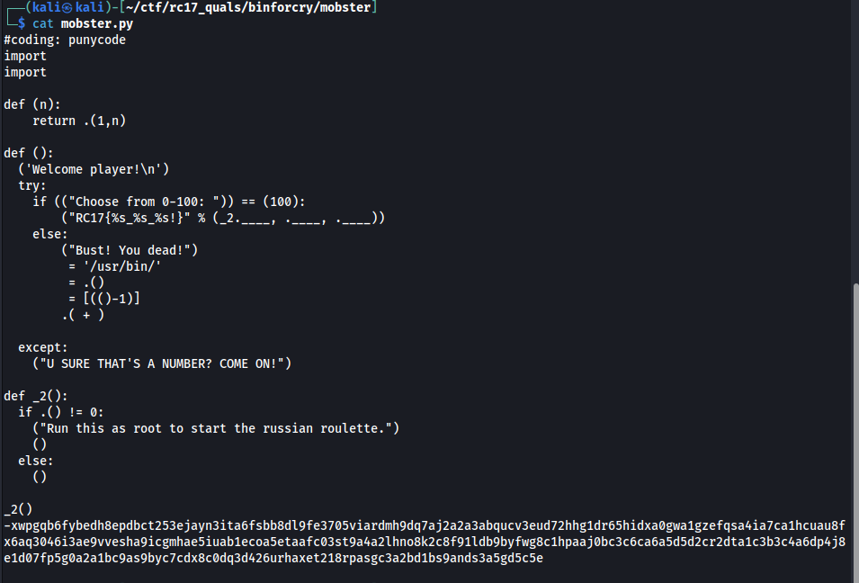
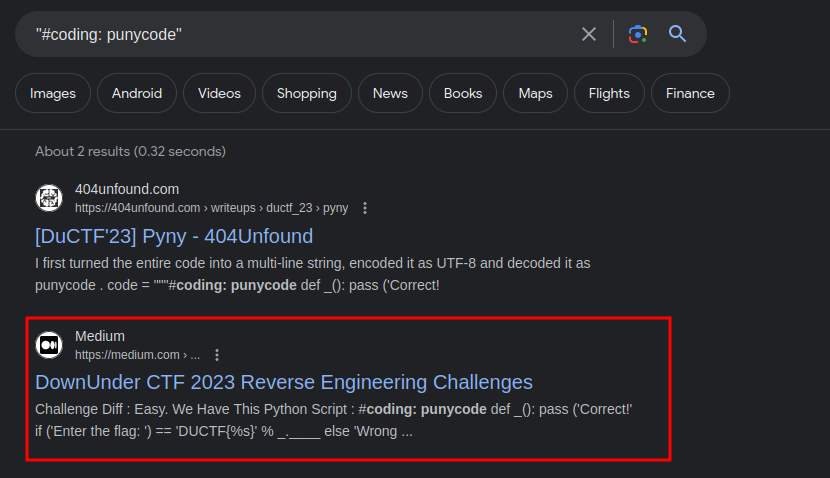
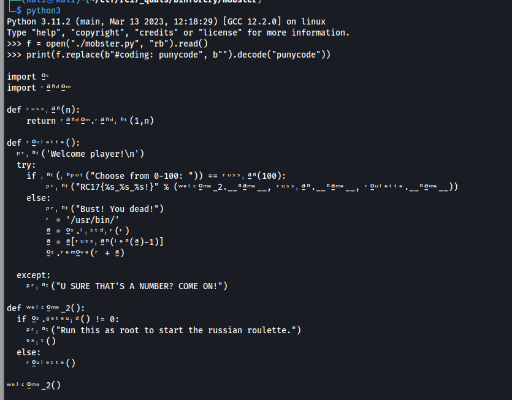

[BinForCry] Mobster - 50 Pts.
We’re given with this file.

Checking out the file, it looks like a python code but something weird is being appended on the end. Also noticed that if we ever run this python script, there’s a chance that it will brick our system by executing something from /usr/bin.

From above, we can also see the first line #coding: punycode. Searching it, we found some other writeups on how they solve this kind of CTFs. We chose the second one.

Turns out, we can run the following code against the mobster.py file.
f = open('<>', 'rb').read()
print(f.replace(b'#coding: punycode',b'').decode('punycode'))
Running it, below is the output:
We can derive the flag from above:

Flag is: RC17{welcome_2_russian_roulette}